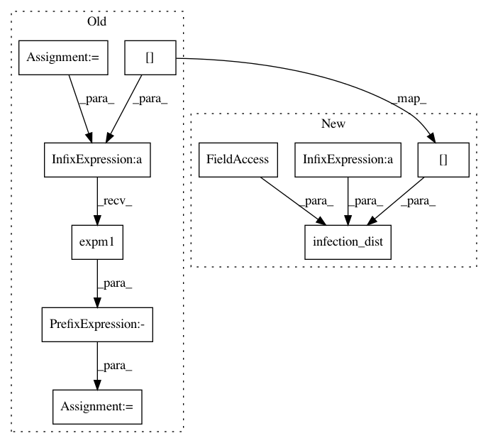

cf0f0a8fdfcba2fbfc8447a241deb64edff8b3d9,pyro/contrib/epidemiology/seir.py,SimpleSEIRModel,transition_fwd,#SimpleSEIRModel#Any#Any#Any#,94
Before Change
rate_s, prob_e, prob_i, rho = params
// Sample flows between compartments.
prob_s = -(rate_s * state["I"]).expm1()
S2E = pyro.sample("S2E_{}".format(t),
dist.Binomial(state["S"], prob_s))
E2I = pyro.sample("E2I_{}".format(t),
dist.Binomial(state["E"], prob_e))
After Change
// Sample flows between compartments.
S2E = pyro.sample("S2E_{}".format(t),
infection_dist(individual_rate=R0 / tau_i,
num_susceptible=state["S"],
num_infectious=state["I"],
population=self.population))
E2I = pyro.sample("E2I_{}".format(t),
dist.Binomial(state["E"], 1 / tau_e))
I2R = pyro.sample("I2R_{}".format(t),
In pattern: SUPERPATTERN
Frequency: 4
Non-data size: 10
Instances
Project Name: uber/pyro
Commit Name: cf0f0a8fdfcba2fbfc8447a241deb64edff8b3d9
Time: 2020-04-28
Author: fritzo@uber.com
File Name: pyro/contrib/epidemiology/seir.py
Class Name: SimpleSEIRModel
Method Name: transition_fwd
Project Name: uber/pyro
Commit Name: cf0f0a8fdfcba2fbfc8447a241deb64edff8b3d9
Time: 2020-04-28
Author: fritzo@uber.com
File Name: pyro/contrib/epidemiology/sir.py
Class Name: SimpleSIRModel
Method Name: transition_bwd
Project Name: uber/pyro
Commit Name: cf0f0a8fdfcba2fbfc8447a241deb64edff8b3d9
Time: 2020-04-28
Author: fritzo@uber.com
File Name: pyro/contrib/epidemiology/seir.py
Class Name: SimpleSEIRModel
Method Name: transition_bwd
Project Name: uber/pyro
Commit Name: cf0f0a8fdfcba2fbfc8447a241deb64edff8b3d9
Time: 2020-04-28
Author: fritzo@uber.com
File Name: pyro/contrib/epidemiology/sir.py
Class Name: SimpleSIRModel
Method Name: transition_fwd